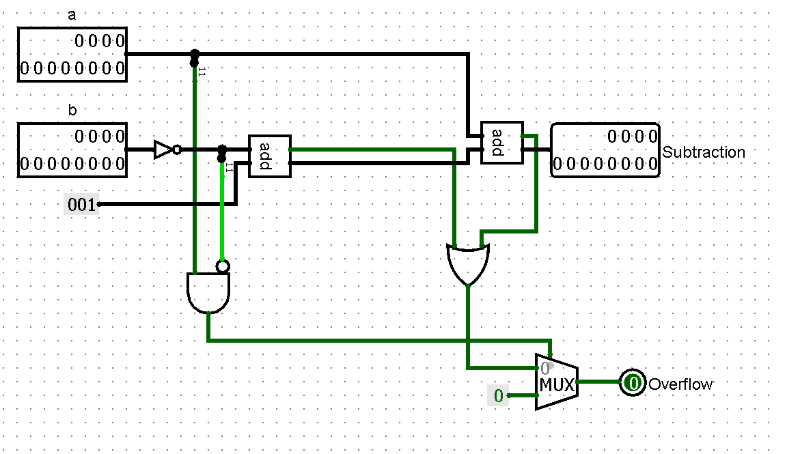
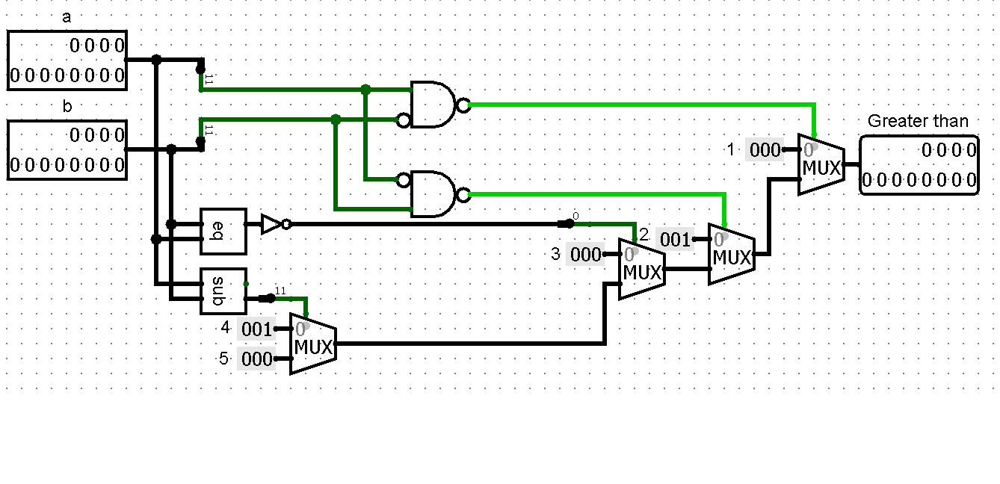
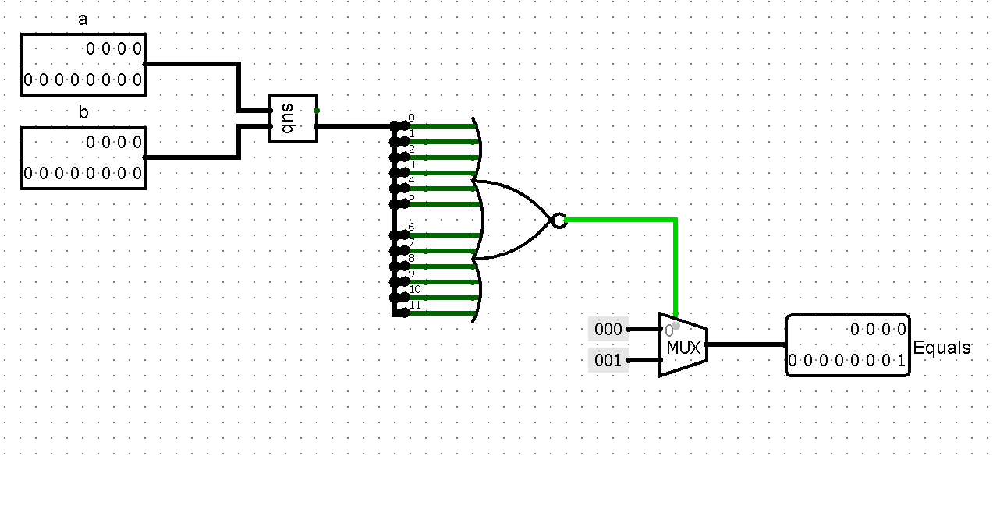
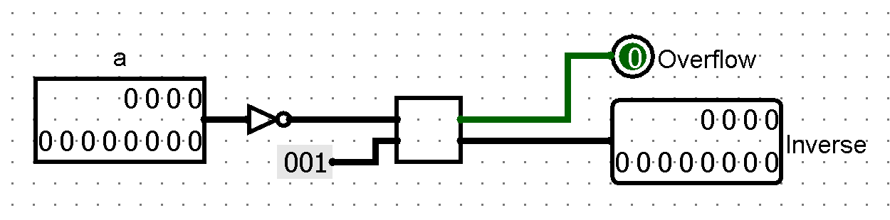
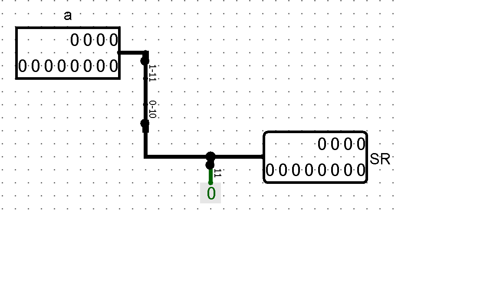
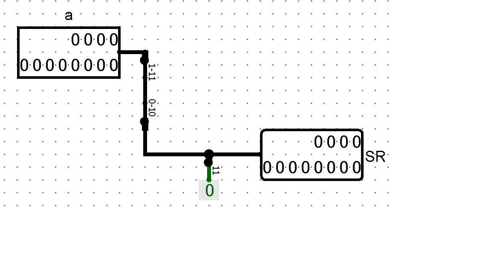
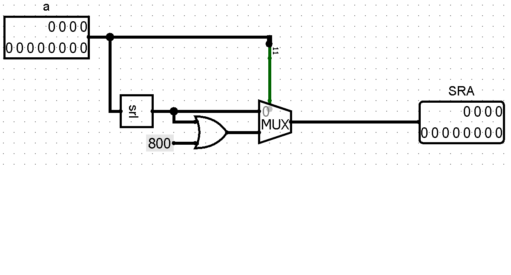
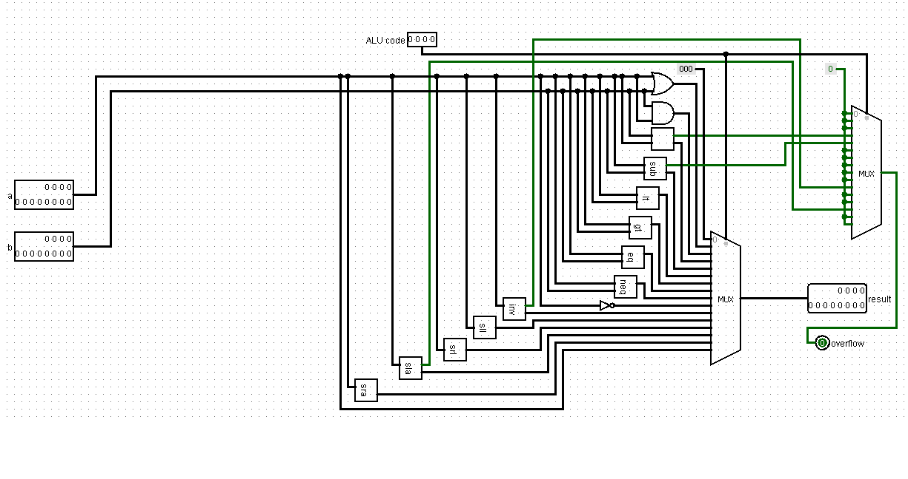

Dit verslag werd opgesteld door:
In de 12-bit ALU met 4-bit selector zijn volgende operaties (met hun selector) ingebouwd:
Voor deze operatie is de 12-bit adder met lookahead uit het vorige project gebruikt.
De subtraction-operatie maakt gebruik van het principe a-b = a+(

De overflow wordt als volgt berekend: als beide inputs negatief zijn is er nooit overflow, anders is er overflow als
één van beide adders een overflow heeft.
Om te berekenen of a kleiner is dan b wordt volgend stappenplan gebruikt:
De berekening voor a groter dan b loopt analoog met die van a kleiner dan b. Het circuit "Lesser than" kan dus hergebruikt worden
op voorwaarde dat de constanten aangepast worden. Dit ziet er dan als volgt uit.

Om te controleren of a en b gelijk zijn aan elkaar wordt a afgetrokken van b. Als er 1 van de 12 bits van het resultaat van
a-b 1 is, dan weten we dat a en b niet gelijk zijn. Geïmplementeerd in een circuit ziet dit er dus als volgt uit:

Dit circuit is analoog aan dat van "Equals". Enkel de constante outputs zijn omgekeerd.
De numeric inverse van a is gelijk aan

Om alle bits een plaats naar links op te schuiven wordt elke bit afgebeeld op zijn locatie + 1. Dit doen we door
een nieuwe bus te creeëren en elke bit op zijn nieuwe plaats te zetten in deze bus. op plaats 0 wordt een 0 gezet met behulp van
een constante.

Deze operatie verloopt bijna analoog met "Shift left logical". Elke bit wordt afgebeeld op zijn locatie - 1.
op plaats 11 wordt een o gezet met behulp van een constante.

Deze operatie staat voor 2*a oftewel a+a. Er wordt een 12-bit adder gebruikt om deze operatie uit te voeren.
Deze operatie loopt analoog met "Shift right logical" als a positief is. Als a negatief is kan "Shift right logical"
wel gebruikt worden, maar dan moet bit 11 vervangen worden door 1. Dit doen we met behulp van een OR-gate en een
12-bit constante 0x800.

De ALU ziet er als volgt uit.
